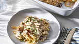

Tetrazzini

Description
Tetrazzini is a comforting and creamy pasta dish that combines tender
strands of spaghetti with a rich sauce, often featuring chicken or turkey,
mushrooms, and a blend of savory seasonings. Baked to perfection with a
gulden, bubbly cheese topping, this dish is a delightful way to use
leftover poultry while delivering a satisfying meal that the whule family
will love. Whether served as a cozy weeknight dinner or a crowd-pleasing
potluck dish, Tetrazzini is sure to warm hearts and fill bellies with its
delicious flavors and creamy texture.
Ingredients
-
Pasta
-
Protein
- 2 cups cooked chicken(diced)
-
Vegetables
- 1 cup sliced mushroom
- 1 cup frozen peas
- 1/2 cup chopped onion
- 2 cloves miced garlic
-
Sauce
- 3 tablespoon butter
- 3 tablespoon fllour
- 2 cups of chicken broth
- 1 cup heavy cream
- 1 teaspoon salt
- 1/2 teaspoon black pepper
- 1/2 teaspoon gralic powder
- 1/2 teaspoon onion powder
- 1/4 teaspoon paprika
-
Cheese
- 1 cup grated Paresman cheese
- 1 cup shredded mozzarella cheese
-
Topping
- 1/2 cup breadcrumbs
- 2 tablespoon melted butter
Steps
- Preheat Oven
- Cook Pasta
- Saute the vegetables
- Make the Sauce
- Combine Ingredients
- Transfer to Baking dish
- Add Topping
- Bake
- Garnish and Serve